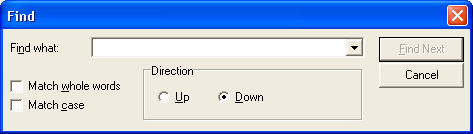
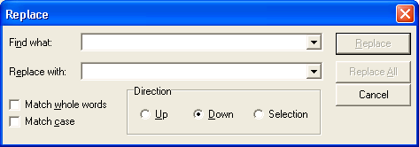

title: Find and Replace Dialog Boxes description: Displays a modeless dialog box that allows the user to specify a string to search for, as well as options to use when searching for text in a document. ms.assetid: c8c035bf-795d-42a7-abc6-168dea43e6e9 keywords:
Displays a modeless dialog box that allows the user to specify a string to search for, as well as options to use when searching for text in a document. The Replace dialog box lets the user specify a string to search for and a replacement string, as well as options to control the operation.
You create and display a Find dialog box by initializing a FINDREPLACE structure and passing the structure to the FindText function. The following illustration shows a typical Find dialog box.

You create and display a Replace dialog box by initializing a FINDREPLACE structure and passing the structure to the ReplaceText function. The following illustration shows a typical Replace dialog box.

Unlike other common dialog boxes, the Find and Replace dialog boxes are modeless. A modeless dialog box allows the user to switch between the dialog box and the window that created it. This is useful for letting the user search for a string, switch to the application window to work on the string, and switch back to the dialog box to search for another string without repeating the command needed to open the dialog box.
If the FindText or ReplaceText function successfully creates the dialog box, it returns a handle to the dialog box. You can use this handle to move and communicate with the dialog box. If the function cannot create the dialog box, it returns NULL. You can determine the cause of an error by calling the CommDlgExtendedError function to retrieve the extended error value.
This section discusses the following topics.
Before creating a Find or Replace dialog box, you must call the RegisterWindowMessage function to get a message identifier for the FINDMSGSTRING registered message. You can then use the identifier to detect and process messages sent from the dialog box. When the user clicks the Find Next, Replace, or Replace All button in a dialog box, the dialog box procedure sends a FINDMSGSTRING message to the window procedure of the owner window. When you create the dialog box, the hwndOwner member of the FINDREPLACE structure identifies the owner window.
The lParam parameter of a FINDMSGSTRING message is a pointer to the FINDREPLACE structure that you specified when you created the dialog box. Before sending the message, the dialog box sets the members of this structure with the latest user input, including the string to search for, the replacement string (if any), and options for the find-and-replace operation.
In a FINDMSGSTRING message, the Flags member of the FINDREPLACE structure includes one of the following flags to indicate the event that caused the message.
| Flag | Meaning |
|---|---|
| FR_DIALOGTERM | The dialog box is closing. After the owner window processes this message, a handle to the dialog box is no longer valid. |
| FR_FINDNEXT | The user clicked the Find Next button in a Find or Replace dialog box. The lpstrFindWhat member specifies the string to search for. |
| FR_REPLACE | The user clicked the Replace button in a Replace dialog box. The lpstrFindWhat member specifies the string to replace and the lpstrReplaceWith member specifies the replacement string. |
| FR_REPLACEALL | The user clicked the Replace All button in a Replace dialog box. The lpstrFindWhat member specifies the string to replace and the lpstrReplaceWith member specifies the replacement string. |
Â
For a Find Next or Replace All message, the Flags member can include any combination of the following flags to indicate the search options.
| Flag | Meaning |
|---|---|
| FR_DOWN | If set, the Down button of the direction radio buttons is selected, indicating that user wants to search from the current location to the end of the document. If FR_DOWN is not set, the Up button is selected so the user wants to search to the beginning of the document. |
| FR_MATCHCASE | If set, the Match Case check box is selected, indicating that the user wants the search to be case sensitive. If FR_MATCHCASE is not set, the check box is unselected so that the search can be case insensitive. |
| FR_WHOLEWORD | If set, the Match Whole Word Only check box is selected, indicating that the user wants to search only for whole words that match the search string. If FR_WHOLEWORD is not set, the check box is unselected so you should also search for word fragments that match the search string. |
Â
To customize a Find or Replace dialog box, you can use any of the following methods:
When you create a Find or Replace dialog box, you can set flags in the Flags member of the FINDREPLACE structure to hide or disable any of the search option controls. For example, you can set the FR_NOMATCHCASE flag to disable the Match Case check box or set the FR_HIDEMATCHCASE flag to hide it.
You can provide a custom template for a Find or Replace dialog box, for example, if you want to include additional controls that are unique to your application. The FindText and ReplaceText functions use your custom template in place of the default template.
To provide a custom template for a Find or Replace dialog box
If your custom template is a resource in an application or dynamic-link library, set the FR_ENABLETEMPLATE flag in the Flags member. Use the hInstance and lpTemplateName members of the structure to identify the module and resource name.
-Or-
If your custom template is already in memory, set the FR_ENABLETEMPLATEHANDLE flag. Use the hInstance member to identify the memory object that contains the template.
You can provide an FRHookProc hook procedure for a Find or Replace dialog box. The hook procedure can process messages sent to the dialog box. If you use a custom template to define additional controls, you must provide a hook procedure to process input for your controls.
To enable a hook procedure for a Find or Replace dialog box
After processing its WM_INITDIALOG message, the dialog box procedure sends a WM_INITDIALOG message to the hook procedure. The lParam parameter of this message is a pointer to the FINDREPLACE structure used to initialize the dialog box.
If the hook procedure returns FALSE in response to the WM_INITDIALOG message, the dialog box will not be shown unless the hook procedure displays it. To do this, first perform any other paint operations, and then call the ShowWindow and UpdateWindow functions. The following code provides an example:
// We've returned FALSE in response to WM_INITDIALOG.
// We've performed any other paint operations.
// Now we display the dialog box.
ShowWindow(hDlg, SW_SHOWNORMAL);
UpdateWindow(hDlg);
Â
Â